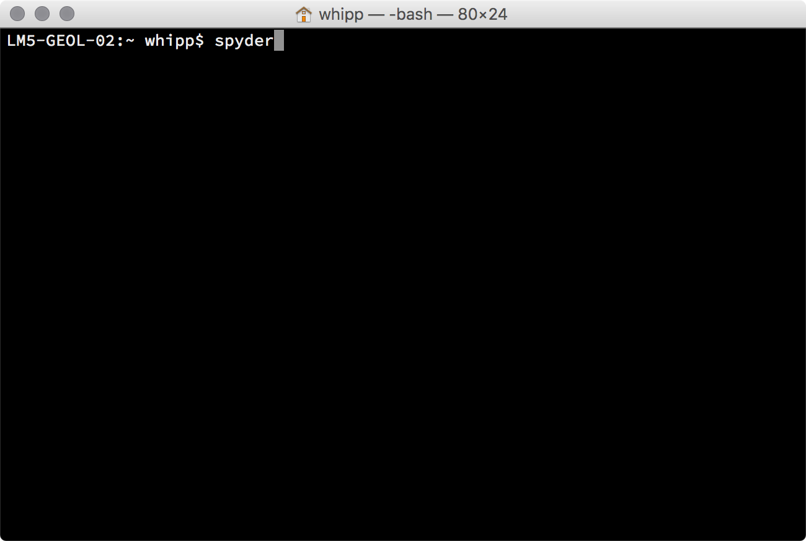
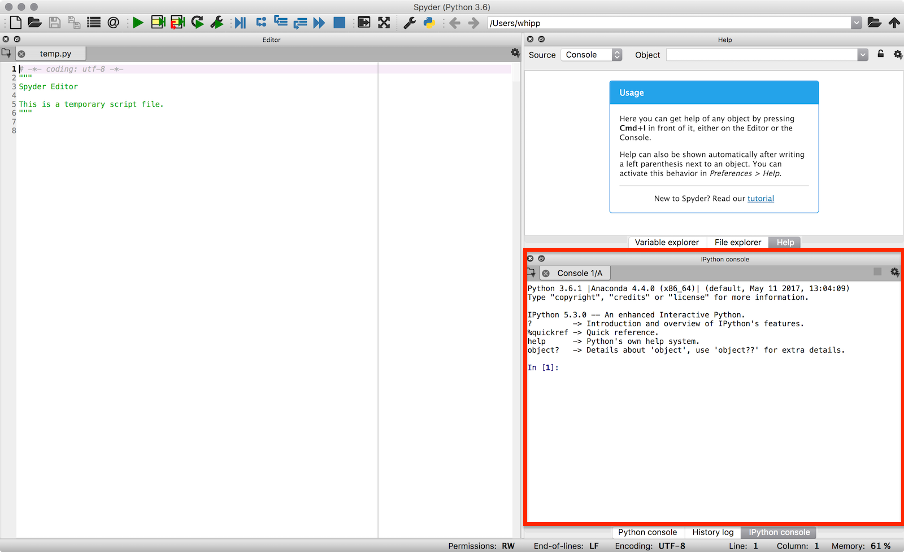
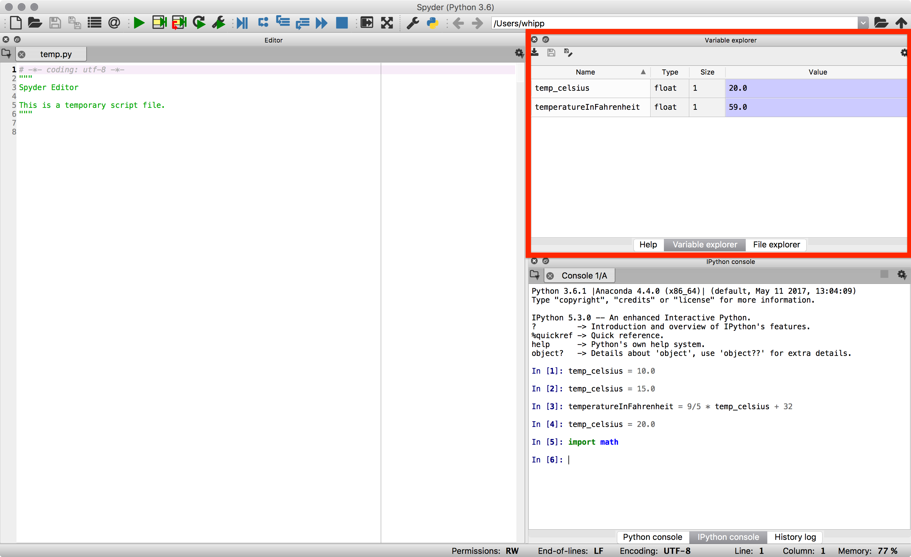

A taste of Python¶
Sources¶
This tutorial is based on a the Software Carpentry group’s lessons on Programming with Python.
Getting started¶
We will start our Python lesson by opening a program called Spyder. We’ll learn more about how Spyder works later in the course, but for now we will be using some basic features of Spyder such as the IPython console. In the IPython console you can type in Python commands and press Enter to execute them.
We can start by launching Spyder.
- In Windows, this can be done by clicking on Programs -> Anaconda -> Spyder in the start menu.
- On a Mac or in Linux, Spyder can be launched from a terminal by typing
spyder.
Launching Spyder from a terminal
{kind=link}
2. The Spyder window should appear after a moment and it will look something like the one below. For now, we are only interested in using the IPython console in the lower right panel (outlined in red).
The Spyder IDE window. The IPython console is highlighted in the red box.
{kind=link}
Now we are ready to start. In the lesson that follows, simply enter the commands into the IPython console and press Enter to execute them.
Variables, arithmetic and modules¶
We will start our Python lesson by learning a bit of the basic operations you can perform using Python.
Python can be used as a simple calculator.
In [1]: 1 + 1 Out[1]: 2 In [2]: 5 * 7 ����������Out[2]: 35
You can use Python for more advanced math by using functions. Functions are pieces of code that perform a single action such as printing information to the screen (e.g., the
print()function). Functions exist for a huge number of operations in Python.In [3]: sin(3) --------------------------------------------------------------------------- NameError Traceback (most recent call last) <ipython-input-3-eb391534dd1e> in <module>() ----> 1 sin(3) NameError: name 'sin' is not defined In [4]: sqrt(4) ���������������������������������������������������������������������������������������������������������������������������������������������������������������������������������������������������������������������������������������������������������������������������������������������������������������������������������������������������������������������������������������������������������������������������������������������������������������������������������������������������������������������������������������������������������������������������������������������������������������������������������������������������������������������������������������������������������������������������������������������������������������������������������������������������������������������������������������������������������������������������������������������������������������������������--------------------------------------------------------------------------- NameError Traceback (most recent call last) <ipython-input-4-718d7f173e1d> in <module>() ----> 1 sqrt(4) NameError: name 'sqrt' is not defined
Wait, what? Python can’t calculate square roots or do basic trigonometry? Of course it can, but we need one more step.
The list of basic arithmetic operations that can be done by default in Python is in the table below.
Operation Symbol Example syntax Returned value Addition +2 + 24Subtraction -4 - 22Multiplication *2 * 36Division /4 / 22Exponentiation **2**38For anything more advanced, we need to load a module.
In [5]: import math In [6]: math.sin(3) Out[6]: 0.1411200080598672 In [7]: math.sqrt(4) ���������������������������Out[7]: 2.0
A module, also known as a library, is a group of code items such as functions that are related to one another. Modules are loaded using
import. Functions that are part of the modulemodulenamecould then be used by typingmodulename.functionname(). For example,sin()is a function that is part of themathmodule, and used by typingmath.sin()with some number between the parentheses. Modules may also contain constants such asmath.pi.In [8]: math.pi Out[8]: 3.141592653589793 In [9]: math.sin(math.pi) ��������������������������Out[9]: 1.2246467991473532e-16
Functions can also be combined.
In [10]: print(math.sqrt(4)) 2.0 In [11]: print('The square root of 4 is',math.sqrt(4)) ����The square root of 4 is 2.0
Variables can be used to store values calculated in expressions and used for other calculations.
In [12]: temp_celsius = 10.0 In [13]: print(temp_celsius) 10.0 In [14]: print('temperature in Fahrenheit:', 9/5 * temp_celsius + 32) �����temperature in Fahrenheit: 50.0
Above, we also see one common format for good variable naming, separation of words by underscores
_(e.g.,temp_celsius). This is called pothole_case_naming. We’ll see another below.Values stored in variables can also be updated.
In [15]: temp_celsius = 15.0 In [16]: print('temperature in Celsius is now:', temp_celsius) temperature in Celsius is now: 15.0 In [17]: temperatureInFahrenheit = 9/5 * temp_celsius + 32 In [18]: print('temperature in Celsius:', temp_celsius, 'and in Fahrenheit:', temperatureInFahrenheit) temperature in Celsius: 15.0 and in Fahrenheit: 59.0
An alternative to naming variables using pothole_case_naming is to use capital letters for each word with no spaces between (e.g.,
temperatureInFahrenheit). This is called camelCaseNaming. Both options are easy to read and help you use good variable names. After all, people should be able to easily understand what different variables contain.Note that changing the values of a variable does not affect those of other variables.
In [19]: temp_celsius = 20.0 In [20]: print('temperature in Celsius is now:', temp_celsius, 'and temperature in Fahrenheit is still:', temperatureInFahrenheit) temperature in Celsius is now: 20.0 and temperature in Fahrenheit is still: 59.0
One of the nice options in IPython is that you can see which variables are in memory by typing
%whos.In [21]: %whos Variable Type Data/Info --------------------------------------------- math module <module 'math' from '/Use<...>h.cpython-36m-darwin.so'> np module <module 'numpy' from '/Us<...>kages/numpy/__init__.py'> plt module <module 'matplotlib.pyplo<...>es/matplotlib/pyplot.py'> temp_celsius float 20.0 temperatureInFahrenheit float 59.0
Note that the
npandpltmodules are loaded in the IPython session above, which may not be the case for you. In addition, you can view this same information using the Variable explorer panel above the IPython console in Spyder.The Spyder variable explorer panel (red box).
There are 4 basic data types in Python as shown in the table below.
Data type name Data type Example intWhole integer values 4floatDecimal values 3.1415strCharacter strings 'Hot'boolTrue/false values TrueThe data types are displayed when using
%whos, but can also be found using thetype()function. As you will see, the data types are important because some are not compatible with one another.In [22]: weatherForecast = 'Hot' In [23]: type(weatherForecast) Out[23]: str In [24]: type(temperatureInFahrenheit) �������������Out[24]: float In [25]: temperatureInFahrenheit = temperatureInFahrenheit + 5.0 * weatherForecast ����������������������������--------------------------------------------------------------------------- TypeError Traceback (most recent call last) <ipython-input-25-5fff6a7a87cc> in <module>() ----> 1 temperatureInFahrenheit = temperatureInFahrenheit + 5.0 * weatherForecast TypeError: can't multiply sequence by non-int of type 'float'
{kind=link}
Summary and the next steps¶
That’s it for today. We have seen a bit of what we can do in Python: basic arithmetic, using functions, defining variables and combining these things to put the computer to work for us. In the coming weeks we will explore each of these items, and many more, in greater detail to help develop your familiarity with Python and some basic programming skills.